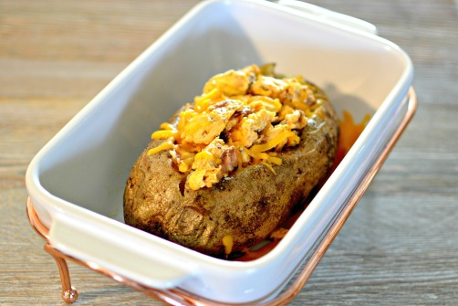

Breakfast Baked Potato

Description
I came up with this idea one morning when my son wanted hash browns, but I didn't want to do all the chopping and such. So, I just baked a potato and stuffed all the other breakfast items inside. He loved it and is now making it on his own! And there are many options with this dish.
Ingredients
- 1 large russet potato
- 1 tablespoon vegetable oil
- 1 pinch salt
- ⅛ pound sausage, or as desired
- 2 slices bacon
- 4 tablespoons butter, divided
- Salt and ground black pepper to taste
- 2 eggs
- 1 tablespoon milk
- ¼ cup shredded Cheddar cheese
Steps
- Preheat the oven to 425 degrees F (220 degrees C).
- Rub potato with vegetable oil and salt. Prick several times with a fork and wrap in aluminum foil. Place on a baking sheet.
- Bake in the preheated oven until squeezable yet firm, about 50 minutes.
- While potato is cooking, heat a large skillet over medium-high heat. Cook and stir sausage in the hot skillet until browned and crumbly, 5 to 7 minutes. Drain and discard grease. Set sausage aside in a bowl.
- Place bacon in the large skillet and cook over medium-high heat, turning occasionally, until evenly browned, about 10 minutes. Drain bacon slices on paper towels. Let cool slightly; crumble.
- Remove potato from the oven. Slice in the center to create a pocket; add 2 tablespoons butter, salt, and pepper to the potato. Stuff potato with crumbled sausage and bacon.
- Whisk eggs, milk, salt, and pepper together in a bowl.
- Heat remaining 2 tablespoons butter in a nonstick skillet over medium heat. Pour egg mixture into skillet and scramble to desired doneness, about 5 minutes.
- Place scrambled eggs on top of meat in potato. Sprinkle Cheddar cheese on top of warm eggs.